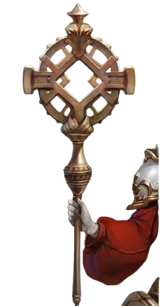
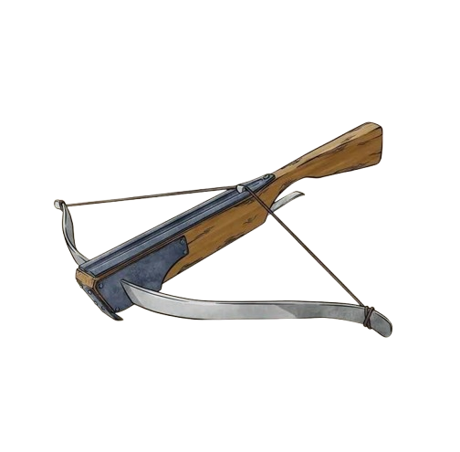

Alice
Identidade
- Interpretado: Mestre
- Raça: Humano
- Nivel: 2
- Idade: 18
- Altura: 1,60
- Classe: Clérigo
- Antecedência: Eremita
- Associação: Guilda Fogo Eterno
- Hobbs: Passear e estudar novas culturas
- Personalidade: Gentil, Estressadinha
Historia
Nascida e crescida na igreja da santa luz, onde veneram a deusa da luz aurelynn, ela foi educada na escola das sacerdotisa, e ensinada sobre os 7 deuses, sempre bem devota e gostava de ajudar os outros, as freiras e padres perceberam que seus dotes para a magia de luz e cura eram incríveis, e começaram a chamá-la de santa, ao descobrir sobre os demônios, não pensou duas vezes em se voluntariar para ajudar e lutar contra os demônios, de inicio os padres e freiras ficaram com medo de perderem a santa, mais vendo a determinação nos olhos de Alice, decidiram levá-la para a capital mundial, 4 trevos, onde la, a deixaram com um confiável cavaleiro, Paulo Envyn, que a deixou na guilda do fogo eterno, na volta do cavaleiro, ele apresentou os novos membros da equipe e em seguida, partiram numa aventura para explorar uma caverna de hobgoblins.Aparencia
Seu rosto é jovial e iluminado, com grandes olhos verdes que transmitem sinceridade e entusiasmo. Ela tem um sorriso acolhedor e expressão decidida.
Cabelos: Loiros, lisos e curtos, cortados acima dos ombros. Um estilo prático e delicado.
Vestuário: Usa vestes sagradas brancas com detalhes azul-claros e dourados.
O traje possui padrões geométricos e ornamentações que lembram as vestes de uma ordem religiosa formal.
Na cabeça, um chapéu cerimonial alto com um emblema dourado semelhante a uma flor-de-lis ou símbolo de fé.
Status e aptidões
-
Vida [19]
-
Defesa [16]
-
força [+1]
-
destreza [+3]
-
constituição [+2]
-
inteligencia [+3]
-
sabedoria [+8]
-
carisma [+7]
Raça: Humana
Aumento no Valor de Habilidade. Todos os
valores de habilidade aumentam em 1.
Deslocamento base de caminhada
é 9 metros.
Classe: Clériga
Domínio da luz
Deuses da luz, promovem os ideias do renascimento e
renovação, verdade, vigilância e beleza, muitas vezes
usando o símbolo do sol. Alguns desses deuses são
retratados como o próprio sol ou como um cocheiro que
carrega o sol através do céu. Outros são sentinelas
incansáveis cujos olhos penetram cada sombra e veem
através de cada enganação. Alguns são divindades da
beleza e arte que ensinam que a arte é o veículo para o
aprimoramento da alma. Clérigos de um deus da luz são
almas esclarecidas infundidas com radiação e o poder
divino da visão do discernimento, conhecidos por afastar
as mentiras e incineras a escuridão.
Truque Adicional
Quando você escolhe esse domínio no 1° nível, você ganha
o truque luz se você ainda não o conhecia.
Labareda Protetora
Também a partir do 1° nível, você pode interpor luz
divina entre você e uma criatura atacante. Quando você
for atacado por uma criatura a até 9 metros de você que
você pode ver, você pode usar sua reação para impor
desvantagem na jogada de ataque, causando labaredas de
luz na frente do atacante antes dele atingir ou errar. Um
atacante que não puder ser cegado é imune a essa característica
Canalizar Divindade:Radiação Do Amanhecer
A partir do 2° nível, você pode usar seu Canalizar
Divindade para criar uma explosão de luz solar, banindo
a escuridão e causando dano radiante aos inimigos.
Com uma ação, você ergue seu símbolo sagrado e
qualquer escuridão mágica num raio de 9 metros de você
é dissipada.
Além disso, cada criatura hostil a até 9
metros deve realizar um teste de resistência de
Constituição.
Uma criatura sofre dano radiante igual a
2d10 + seu nível de clérigo se falhar no teste e metade
desse dano caso seja bem sucedida. Uma criatura que
tenha cobertura total contra você não é afetada.
Armas
| Arma | Descrição |
|---|---|
|

Luminus |
um cajado de madeira, bem feito
dano: 1d6+for ou 1d8 se segurado com as duas mãos. |
|

Besta Leve |
uma besta leve
dano: 1d8+des. |
Magias
Truques
- Truque 1: Luz , Você toca um objeto que não tenha mais 3 metros [10 feet] em qualquer dimensão. Até a magia acabar, o objeto emite luz plena num raio de 6 metros [20 feet] e penumbra por 6 metros [20 feet] adicionais. Cobrir o objeto completamente com alguma coisa opaca bloqueará a luz. A magia termina se você conjura-la novamente ou dissipa-la com uma ação.
- Truque 2: Estabilizar , Escolha um ser vivo dentro do alcance que tenha 0 Pontos de Vida e não esteja morta. O Ser é estabilizada.
- Truque 3: Chamas Sagradas , Radiação similar a uma chama desce sobre uma criatura que você possa ver, dentro do alcance. O alvo deve ser bem sucedido num teste de resistência de Destreza ou sofrerá 1d8 de dano radiante. O alvo não recebe qualquer benefício de cobertura contra esse teste de resistência.
- Truque 4: Resistência , Você toca uma criatura voluntária. Uma vez, antes da magia acabar, o alvo pode rolar um d4 e adicionar o valor jogado a um teste de resistência de sua escolha. Ele pode rolar o dado antes ou depois de realizar o teste de resistência. Então, a magia termina.
- Truque 5: N/A
Magias 1
- Magia 1: fogo Das Fadas , Cada objeto num cubo de 6 metros [20-foot cube] dentro do alcance fica delineado com luz azul, verde ou violeta (à sua escolha). Qualquer criatura na área, quando a magia é conjurada, também fica delineada com luz, se falhar num teste de resistência de Destreza. Pela duração, os objetos e criaturas afetadas emitem penumbra num raio de 3 metros [10-foot radius].
- Magia 2: Mãos Flamejantes , Conforme você segura suas mãos com os polegares se tocando e os dedos abertos, uma fina camada de chamas emerge das pontas dos seus dedos estendidos. Cada criatura em um cone de 4,5 metros [15-foot cone] deve realizar um teste de resistência de Destreza. Uma criatura sofre 3d6 de dano de fogo se falhar no teste, ou metade desse dano se obtiver sucesso.
- Magia 3: Curar Ferimentos , Uma criatura que você tocar recupera uma quantidade de pontos de vida igual a 2d8 + seu modificador de habilidade de conjuração.
- Magia 4: Benção , Você abençoa até três criaturas, à sua escolha, dentro do alcance. Sempre que um alvo realizar uma jogada de ataque ou teste de resistência antes da magia acabar, o alvo pode jogar um d4 e adicionar o valor jogado ao ataque ou teste de resistência.
- Magia 5: Criar ou Destruir Água
Criar Água. Você cria 30 litros [10 gallons] de água limpa dentro do alcance, em um recipiente aberto. Alternativamente, a água pode cair como chuva em um cubo de 9 metros [30-foot cube] dentro do alcance, extinguindo chamas expostas na área.Destruir Água. Você destrói até 30 litros [10 gallons] de água de um recipiente aberto dentro do alcance. Alternativamente, você pode destruir um nevoeiro em um cubo de 9 metros [30-foot cube] dentro do alcance.
- Magia 6: Escudo da fé , Um campo cintilante aparece ao redor de uma criatura, à sua escolha, dentro do alcance, concedendo +2 de bônus na CA pela duração.
- Magia 7: Infrigir Ferimentos , Faça um ataque mágico corpo-a-corpo contra uma criatura que você pode alcançar. Em um acerto, o alvo sofre 3d10 de dano necrótico.
- Magia 8: Palavras Curativas , Uma criatura, à sua escolha, que você possa ver dentro do alcance recupera uma quantidade de pontos de vida igual a 2d4 + seu modificador de habilidade de conjuração.
- Magia 9: Santuário , Você protege uma criatura, dentro do alcance, contra ataques. Até a magia acabar, qualquer criatura que tentar atacar ou usar magias que causem dano contra criatura protegida deve, primeiro, realizar um teste de resistência de Sabedoria. Se falhar na resistência, a criatura deve escolher um novo alvo ou perderá o ataque ou magia. Essa magia não protege a criatura contra efeitos de área, como a explosão de uma bola de fogo.
- Magia 10: Proteção Contra o Bem e Mal , Até a magia acabar, uma criatura voluntária que você tocar estará protegida contra certos tipos de criaturas: aberrações, celestiais, corruptores, elementais, fadas e mortos-vivos.
- Magia 11: Perdição , Até três criaturas, à sua escolha, que você possa ver dentro do alcance, devem realizar um teste de resistência de Carisma. Sempre que um alvo que falhou nessa resistência realizar uma jogada de ataque ou um teste de resistência antes da magia acabar, o alvo deve rolar um d4 e subtrair o valor rolado da jogada de ataque ou teste de resistência.
Magias 2
- Magia 1: N/A
- Magia 2: N/A
- Magia 3: N/A
- Magia 4: N/A
- Magia 5: N/A
Magias 3
- Magia 1: N/A
- Magia 2: N/A
- Magia 3: N/A
- Magia 4: N/A
- Magia 5: N/A
Magias 4
- Magia 1: N/A
- Magia 2: N/A
- Magia 3: N/A
- Magia 4: N/A
- Magia 5: N/A
Magias 5
- Magia 1: N/A
- Magia 2: N/A
- Magia 3: N/A
- Magia 4: N/A
- Magia 5: N/A
Magias 6
- Magia 1: N/A
- Magia 2: N/A
- Magia 3: N/A
- Magia 4: N/A
- Magia 5: N/A
Magias 7
- Magia 1: N/A
- Magia 2: N/A
- Magia 3: N/A
- Magia 4: N/A
- Magia 5: N/A
Magias 8
- Magia 1: N/A
- Magia 2: N/A
- Magia 3: N/A
- Magia 4: N/A
- Magia 5: N/A
Magias 9
- Magia 1: N/A
- Magia 2: N/A
- Magia 3: N/A
- Magia 4: N/A
- Magia 5: N/A